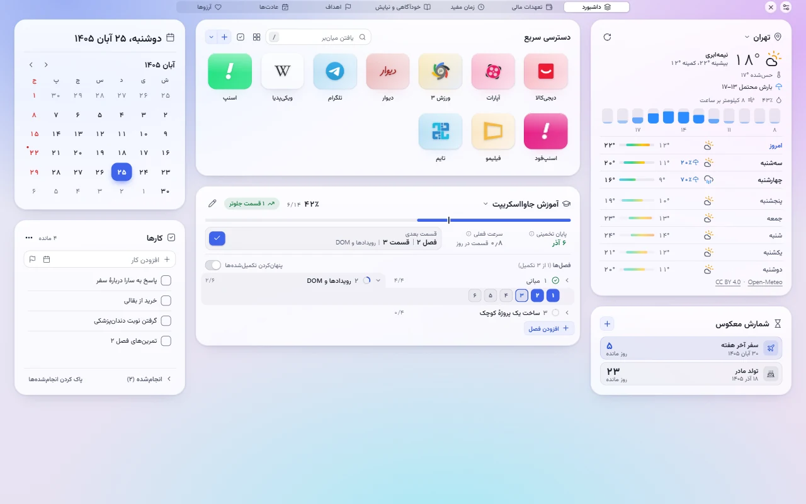
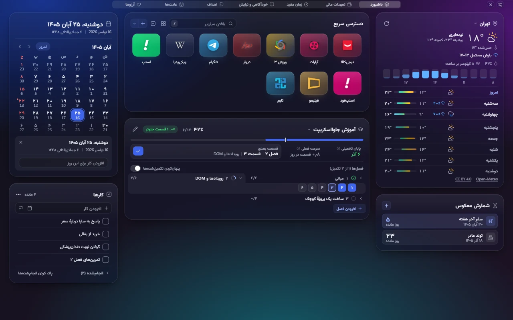

تیوونا، تب جدید کروم با تقویم شمسی
هر بار تب جدیدی باز میکنید، تقویم شمسی و کارهای امروز را ببینید، به سایتهای دلخواهتان بروید و برای کار بعدی تایمر تمرکز را روشن کنید.
افزونهای رایگان برای کرومِ رایانه که جایگزین صفحهٔ تب جدید میشود و به حساب تیوونا نیاز ندارد.

ابزارهای برنامهریزی روزانه در تب جدید
تقویم شمسی، میلادی و قمری
تقویم جلالی و تعطیلات ایران را روی تب جدید ببینید. میتوانید تاریخ میلادی و هجری قمری را هم کنار تاریخ شمسی نمایش دهید و تاریخ هر روز را در هر سه تقویم بخوانید.
فهرست کارهای روزانه
برای کارها موعد، اولویت، یادداشت و مراحل انجام تعیین کنید. کارهای امروز و عقبافتاده را یکجا ببینید یا روزی را در تقویم انتخاب کنید و برای همان روز کار اضافه کنید.
میانبر سایتها و پوشهبندی
سایتهای پرکاربرد را به دسترسی سریع اضافه کنید، در پوشهها بچینید و با صفحهکلید پیدایشان کنید. میتوانید یک پوشه از نشانکهای کروم را هم وارد کنید.
تایمر پومودورو و ثبت زمان تمرکز
مدت تمرکز و استراحت را تنظیم کنید یا از کرنومتر استفاده کنید. میتوانید تایمر را از جزئیات یک کار شروع کنید و زمان صرفشده را برای همان کار ثبت کنید.

در تنظیمات انتخاب کنید کدام ابزارها روی داشبورد باشند. میتوانید آبوهوا یا شمارش معکوس را ببینید، عادتها، هدفها و پیشرفت دورههای آموزشی را پیگیری کنید یا یادداشت روزانه بنویسید.
راهاندازی اولین تب
- تیوونا را از فروشگاه افزونههای کروم نصب کنید و یک تب جدید باز کنید.
- میانبر یک سایت دلخواه را اضافه کنید یا برای یکی از کارهایتان موعد بگذارید.
- زبان فارسی، تقویم شمسی و ابزارهای نمایشی دلخواهتان را در تنظیمات انتخاب کنید.
استفادهٔ آفلاین و حریم خصوصی
تقویم، فهرست کارها، دفتر روزانه و تایمر بدون اینترنت کار میکنند. باز کردن سایتها و دریافت آبوهوا یا آیکون آنلاین میانبرها به اینترنت نیاز دارد.
کارها، دفتر روزانه و تاریخچهٔ تمرکز روی همین دستگاه ذخیره میشوند. با فعال بودن همگامسازی کروم، برخی تنظیمات و میانبرها میتوانند همگام شوند. در نسخههای پیکربندیشده برای PostHog اشتراکگذاری دادههای استفاده اختیاری است و ابتدا خاموش است. جزئیات در سیاست حریم خصوصی (انگلیسی) آمده است.
راهنما و پشتیبانی
برای بازیابی دادهها پس از بهروزرسانی، در تنظیمات به بخش «دادهها» و سپس «پشتیبانهای خودکار» بروید. میتوانید به پشتیبانی تیوونا ایمیل بزنید یا از بخش پشتیبانی در صفحهٔ افزونه در فروشگاه کروم استفاده کنید.